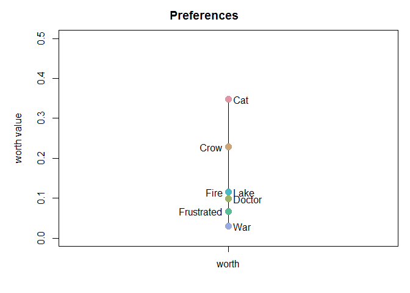

tiefightR
The goal of tiefightR is to rank commodity positions obtained from preference test experiments.
Preference tests are a straightforward approach in asking the appraisal of different goods. To gain a better understanding of the valence of choices made, however, there is a demand for sophisticated tests that allow estimating the strength of the respective preferences. The number of commodities presented at the same time is, however, limited, and in classical test settings, usually, only two options are presented. Here, we evaluate the option of combining multiple binary choices to rank preferences among a larger number of commodities. In the case of continuous data, ties are introduced when the same amount of commodity (e.g. a fluid) was chosen. The tiefightR package creates a ranking system that takes into account the number of ties and intransitivities in the data. This will help the user to rank specific commodities and evaluate the quality of this ranking. In estimating the position of an item, tiefightR takes advantage of the “worth value” in the prefmod package with its fit of a Bradley-Terry model.
Installation
You can install the development version from GitHub with:
# install.packages("devtools") devtools::install_github("mytalbot/tiefightR")
… or download the source file for easy installation from within R (or RStudio) if you don’t have devtools available.
Dependencies
tiefightR uses the following packages as dependencies (in no particular order). Installing tiefightR will usually take care of this. However, sometimes single dependencies can cause problems and have to be installed manually.
“magrittr”, “tibble”, “dplyr”, “reshape2”, “prefmod”, “gnm”, “ggplot2”, “ggpubr”, “foreach”, “viridis”, “ggsci”, Rmisc“,”doRNG"
The following function can be used to install single packages - or just the missing ones from CRAN.
install.packages("paste missing package name here") The Website and Vignette(s)
…can be found here.
Example
This is a basic example which shows how to compare an item with any combination of the remaining items.
library(tiefightR) raw <- tiefightR::human human_test <- tie_worth(xdata = raw, showplot = TRUE, compstudy = "LagreValenceRange_SpringSchool", default = "War", ordn = c("Cat", "Crow", "Doctor", "Frustrated", "Lake", "War", "Fire"), r1 = "Lake", # change this r2 = "Cat") # change this / to multiple combis
